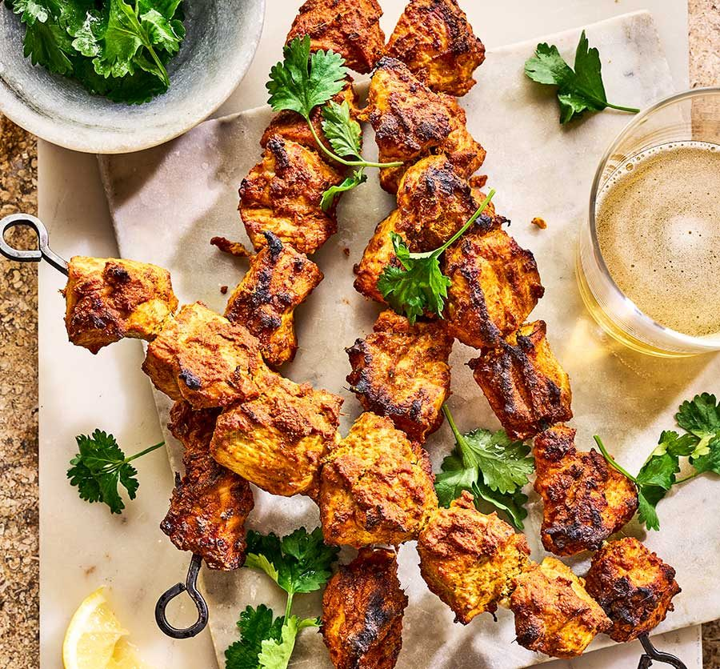

Tandoori Chicken Tikka (Murgh Tikka) is a popular North Indian starter, where boneless chicken pieces are coated with a spicy marinade and then grilled to perfection. This authentic snack recipe is great to make for parties or get-togethers. Use my simple recipe to make it in an oven, stovetop, air fryer, or outdoor grill (gluten-free).
Back to Home